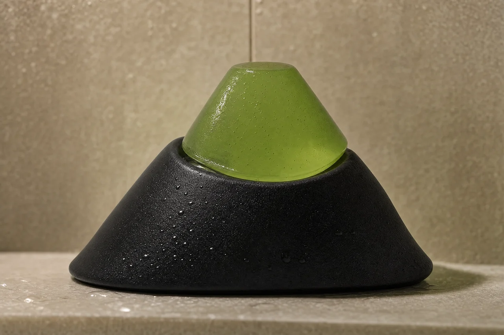
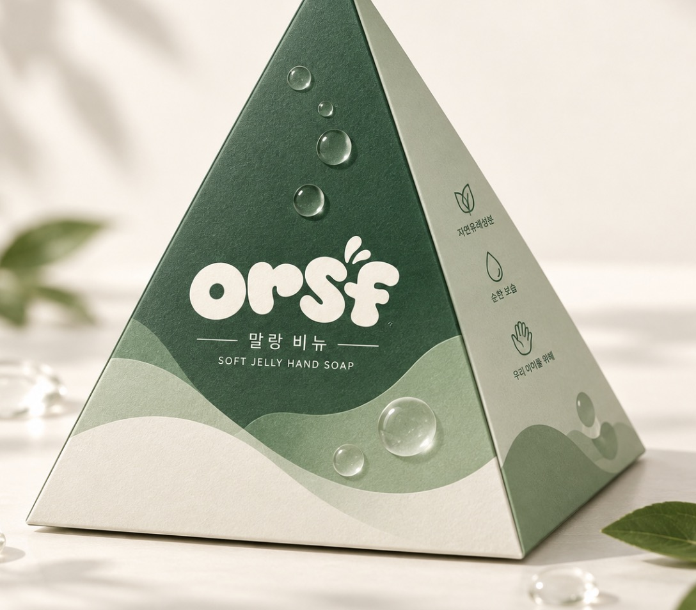

조물조물 말랑비누,
우리 집에서
함께 써볼까요?
아이와 부모가 함께 사용하는 말랑 젤리 비누.
만 4~10세 자녀와 써보고, 솔직한 의견을 들려주세요.
20가구 선발 · 제품 무료 제공 · 배송비 참여자 부담 · SNS 게시 의무 없음

말랑한 촉감이
우리 집에서는 어떨까요?

제주의 오름을 닮은 형태, 손으로 조물조물 만지는 반투명 젤리 비누. 이번 체험에서는 아이와 보호자가 실제로 사용하며 느낀 촉감과 사용성을 알아보려 합니다.
잘 맞았던 점도, 불편했던 점도 듣고 싶습니다. 특정한 반응이나 좋은 평가를 기대하는 체험이 아닙니다.
제공 구성: 말랑비누 본품 70g 1개 + 30초 손씻기 바른 습관 가이드 리플렛.
현무암 받침은 미포함이며 가정의 기존 비누 받침대를 사용해 주세요.
써보고, 들려주세요.
- 01
신청하기
10월 3일 23:59까지
보호자가 신청서를 작성해 주세요. - 02
선정 안내
10월 4일까지 개별 안내.
안내 후 48시간 내 참여를 확인해 주세요. - 03
함께 사용하기
10월 12~14일 순차 발송.
수령 후 7~10일간 사용해 주세요. - 04
의견 들려주기
온라인 사후 설문 약 5분.
솔직한 사용 경험을 남겨주세요.
만 4~6세 / 만 7~10세 각 10가구를 목표로 선발하며 신청 현황에 따라 조정할 수 있습니다. 적격 신청 30가구 도달 시 조기 마감할 수 있습니다.
우리 집의 경험을
들려주세요.
주소는 선정 후 별도로 받습니다.
아이 이름, 생년월일, 사진은 필요하지 않습니다.
- 만 4~10세 자녀와 보호자가 함께 사용
- 수령 후 7~10일 실사용
- 약 5분 온라인 사후 설문 작성
SNS 게시, 긍정 후기, 아이 얼굴 촬영은 요구하지 않습니다.
궁금한 점이 있나요?
신청하면 모두 제품을 받나요?
신청자 중 20가구를 선발합니다. 신청 완료는 최종 선정을 의미하지 않습니다. 연령군과 참여 조건을 확인해 개별 연락드립니다.
받침도 함께 오나요?
아니요. 말랑비누 70g 1개와 손씻기 가이드 리플렛만 제공됩니다. 제품은 무료 제공되며 배송비는 참여자 부담입니다. 배송 주소는 선정 후 별도로 받습니다.
후기를 SNS에 올려야 하나요?
아니요. 사용 후 약 5분 온라인 설문만 필수입니다. 공개 게시물이나 아이 사진을 요청하지 않습니다.
사용할 때 무엇을 확인해야 하나요?
보호자와 함께 동봉된 제품 사용·보관 안내를 확인해 주세요. 비누를 만지는 것만으로 손씻기가 끝나는 것은 아닙니다. 가이드에 따라 손 전체를 꼼꼼하게 씻어 주세요.